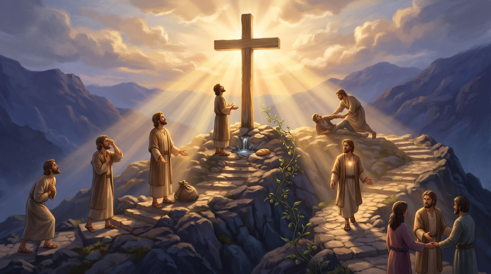

Você passou pelas oito portas. Vista de cima, a lista tem uma forma: a primeira e a última se fecham uma na outra, como parênteses, e guardam entre elas tudo o que nasce da humildade.
Esta visão geral faz mais sentido depois de percorrer as oito portas.
A moldura: dois parênteses
A primeira e a última bem-aventurança têm a mesma promessa, e no presente: “deles é o Reino dos céus”. Elas abrem e fecham a lista, e as seis do meio ficam dentro desses parênteses.
Quem é pobre de espírito (porta 1) reconhece a sua necessidade, e isso o leva a chorar pelo pecado (porta 2). Ver o pecado e querer ser livre dele leva a aprender a ser manso (porta 3), e assim por diante: uma coisa leva à outra, e a pessoa vai crescendo.
Ellen White
O Maior Discurso de Cristo, p. 13.2
Há, através das bem-aventuranças, uma progressão na experiência cristã. Os que sentiram sua necessidade de Cristo, os que choraram por causa do pecado, e se sentaram com Cristo na escola da aflição, hão de, com o divino Mestre, aprender a ser mansos.
Repare no verbo: “hão de aprender”. Não é automático. É uma escola, em que se aprende aos poucos, e a pessoa pode cair, voltar ao caminho e aprender só em parte. Pelo caminho há quem ajude: os misericordiosos (porta 5) levantam quem caiu, e os pacificadores (porta 7) reconciliam. As promessas das seis do meio estão no futuro, e quem passa por elas não desiste: continua até alcançá-las.
E o perseguido (porta 8) precisa da humildade e de todas as outras para suportar. A humildade, no fim, termina em perseguição.
Sete acontecem em você, uma vem de fora
Atualização 30/10/2026
Há mais uma diferença entre as portas. As sete primeiras descrevem o que acontece na pessoa, pela obra de Deus nela: ela reconhece a sua pobreza, chora pelo pecado, aprende a ser mansa, tem fome de justiça, e daí nascem a misericórdia, a pureza e a paz. São mudanças de caráter. A oitava é diferente: não depende de mim. Não está em mim ser perseguido; é preciso que alguém me persiga.
E o centro das sete é a porta 4: três vêm antes dela e três vêm depois. Esta é uma leitura para meditar. O texto não numera essa ordem, mas a estrutura e os versículos abaixo a sustentam.

Passe o mouse sobre os númerosToque nos números para ver cada porta. A oitava porta, a perseguição, não aparece na imagem: veja o item 8 abaixo. Ilustração criada com IA.
Não está na imagem porque vem de fora: não depende de quem caminha, e sim de quem persegue. Tem a mesma promessa da primeira porta, o Reino dos céus. Ver a porta 8 →
Pela graça, não por degraus. Estas portas não são degraus para merecer a salvação. A salvação é pela graça (Ef 2:8-9). Quem olha para Cristo é transformado por ele: a humildade, o choro e a mansidão nascem de olhar para a cruz, e a misericórdia, a pureza e a paz são fruto de permanecer nele (Jo 15:5). É Cristo quem atrai (Jo 12:32) e quem faz. Essas bênçãos são a resposta de quem recebe o que Deus revelou, não a condição para ser salvo.
Quem não sente a sua pobreza (porta 1) e não chora pelo pecado (porta 2) não procura Cristo. E quem tenta fazer tudo com a própria força também não. A mansidão (porta 3) é confiar: entregar o caminho ao Senhor e descansar nele, sabendo que ele fará com o seu poder, e não eu com a minha força. Sem esse sossego a pessoa fica ansiosa pelo futuro e não consegue se alimentar de Cristo.
Mansidão é confiar
Salmo 37:5, 7, 11
Os mansos entregam o caminho ao Senhor e descansam nele, em vez de forçar com as próprias forças. É a mansidão da porta 3, com a sua promessa.
5Entrega o teu caminho ao Senhor; confia nele, e ele tudo fará.
A fome e a sede são o que mais incomoda o corpo: a pessoa quer saciar logo. Jesus compara a isso a inquietude por justiça. E a justiça é uma Pessoa: só Cristo sacia essa fome e essa sede.
Cristo sacia
João 6:35
Quem tem fome e sede de justiça encontra em Cristo o que procura: ele mesmo é o pão.
35Eu sou o pão da vida; aquele que vem a mim não terá fome; e quem crê em mim nunca terá sede.
Na oitava, o verbo muda de dono. Nas sete primeiras a pessoa é descrita pelo que ela é; aqui, quem age são os outros: injuriam, perseguem e dizem mal. Repare também na palavra justiça: a porta 4 tem fome dela e a porta 8 é perseguida por causa dela. E, como a porta 1, ela tem o Reino dos céus já no presente.
A porta 8 vem de fora
Mateus 5:11
Quem age aqui são os outros: eles injuriam, perseguem e falam mal. O bem-aventurado só permanece firme.
11bem-aventurados sois vós quando vos injuriarem, e perseguirem, e, mentindo, disserem todo o mal contra vós, por minha causa.
As três primeiras portas não são o preço para ter o direito de chegar a Cristo. Quem começa é Deus: o Pai, o Filho e o Espírito Santo, que são um só, atraem e chamam quem está cansado e o fazem enxergar o seu estado (Jo 16:8). As portas 1, 2 e 3 são isso acontecendo no coração de quem começa a ver o seu estado e a olhar para ele. É isso que o deixa com fome e sede de justiça. Depois vêm os frutos.
O oposto de cada ponta: Laodiceia
A carta à igreja de Laodiceia mostra o contrário das duas portas que fecham a moldura.
O oposto da porta 1 é o coração que se eleva (Ez 28), o de quem se acha rico e sem falta de nada (Ap 3:17).
Contraste da porta 1
Apocalipse 3:17
Quem se acha rico e sem falta de nada é o oposto do pobre de espírito.
Como dizes: Rico sou, e estou enriquecido, e de nada tenho falta… e não sabes que és um desgraçado, e miserável, e pobre, e cego, e nu
As oito bem-aventuranças não são oito caminhos: são oito portas de um só caminho, e quem vai para o Reino passa por todas. Ele começa na humildade, que reconhece a necessidade (porta 1), e termina em perseguição por causa da justiça (porta 8). Passando por todas elas, da primeira à oitava, Deus forma o caráter, e as promessas de cada porta se cumprem no futuro.
E a primeira e a última guardam a mesma promessa: “deles é o Reino dos céus”. Não é uma promessa só para o futuro: vale para hoje. Quem vive em humildade diante de Deus e quem é perseguido por causa da justiça já tem, agora, o Reino dos céus. As outras seis promessas se cumprem no futuro; esta vale desde já.